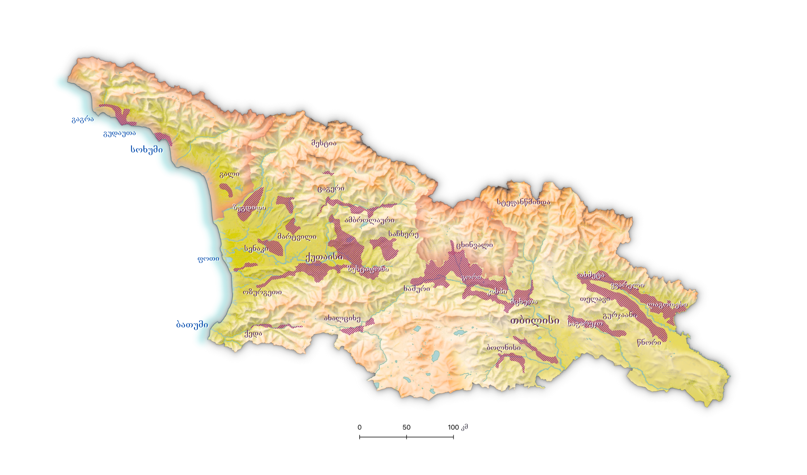

Georgia · vineyards
საქართველო · ვენახები
The wine geography of Georgia
საქართველოს მევენახეობისა და ღვინის გეოგრაფია
Georgian wine is usually described by appellation. This project works a level down — at the microzone, where a boundary is small enough that you can see the vineyards inside it from the air. One page per region, as each is drawn.
ქართულ ღვინოს ჩვეულებრივ აპელაციით აღწერენ. ეს პროექტი ერთი საფეხურით ქვემოთ მუშაობს — მიკროზონაზე, სადაც საზღვარი იმდენად მცირეა, რომ მასში მოქცეული ვენახები ჰაერიდან ჩანს. თითო გვერდი თითო რეგიონისთვის, როგორც კი დაიხაზება.
ამ გვერდის ძირითადი ტექსტი ჯერ ინგლისურადაა. სათაურები, რეგიონები და რუკის ინტერფეისი ქართულადაა.

Rtveli
რთველი
Rtveli is the grape harvest, and the weeks the rest of the year is arranged around. It runs from late summer into autumn, and its timing is geography made visible: the warm valley floors come in first, the higher and later-ripening zones weeks behind them, so the same variety is picked at different times a short drive apart.
რთველი ყურძნის კრეფის სეზონია — კვირეები, რომელთა გარშემოც წლის დანარჩენი დროა გაწყობილი. ზაფხულის ბოლოდან შემოდგომამდე გრძელდება და მისი ვადა თავად გეოგრაფიას იმეორებს: ჯერ თბილი დაბლობი იკრიფება, უფრო მაღალი და გვიან მწიფე ზონები კი კვირებით გვიან — ისე, რომ ერთი და იგივე ჯიში ერთმანეთთან ახლოს სხვადასხვა დროს იკრიფება.
That is the argument for the microzone in a sentence. An appellation can cover ground that ripens a fortnight apart; a microzone usually does not. What the harvest calendar separates, a boundary drawn at this scale can hold together.
სწორედ ეს არის მიკროზონის საჭიროების მთავარი არგუმენტი. აპელაცია შეიძლება მოიცავდეს ისეთ ტერიტორიას, სადაც მოსავალი ორი კვირის სხვაობით მწიფდება; მიკროზონა — ჩვეულებრივ არა. რასაც რთველის კალენდარი ჰყოფს, ამ მასშტაბით გავლებული საზღვარი ერთად იკავებს.
Dates per region, and what the register records about picking order — to be written once the harvest data is in.
What each page does
რას აკეთებს თითოეული გვერდი
A regional page takes its microzones one at a time. The map holds the region in black and white; only the zone under discussion carries colour, blended with the Soviet 1:50 000 sheet for the same ground, and the colour dissolves at the boundary rather than stopping at a line. Where the vineyard register has parcels, they can be drawn inside the zone and coloured by vine or by planting year.
Boundaries are held as GeoJSON in zones/ and grouped
into regions in assets/regions.js. A region appears on this map as
soon as its files are listed there, whether or not it has a page yet.